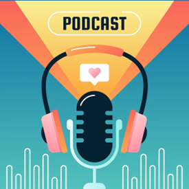

LOS PODCAST

¿QUÉ ES?
El podcast es un contenido en audio, disponible a través de un archivo o streaming. La ventaja del podcast es que es un formato bajo demanda; el usuario lo escucha cuando desea hacerlo.
Puede oírse en diversos dispositivos y esto ha ayudado a aumentar su popularidad. Normalmente, el podcast aborda un asunto específico para construir una audiencia fiel.
El podcast llegó para ayudar a aprovechar el tiempo disponible y aumentar la productividad diaria. Esto es posible debido a la facilidad de solo dar play y escuchar contenido; ya sea en el auto, en el autobús, en el gimnasio, durante el almuerzo y así sucesivamente.